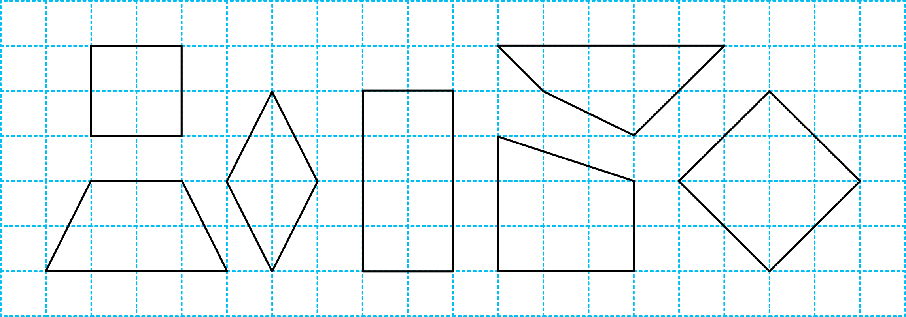

- 물음 1
- 물음 2
- 물음 3
- 물음 4
-
네 각이 모두 직각인 사각형을 모두 찾아보세요.
가나다라마바사가, 라, 사 -
네 변의 길이가 모두 같은 사각형을 모두 찾아보세요.
가나다라마바사가, 다, 사 -
네 각이 모두 직각이고 네 변의 길이가 모두 같은 사각형을 모두 찾아보세요.
가나다라마바사가, 사 -
네 각이 모두 직각이고 네 변의 길이가 모두 같은 사각형의 이름을 지어 보세요.
가나다라마바사예정사각형